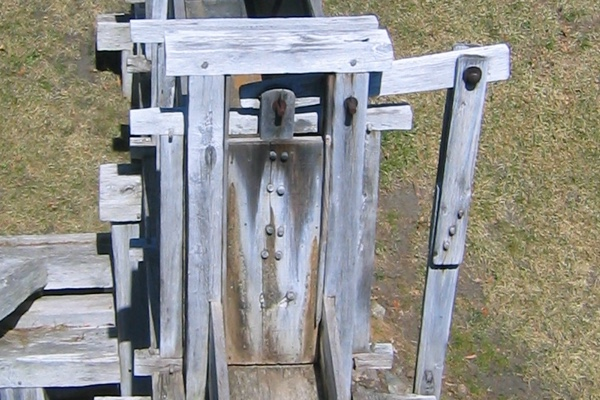

In 1646, simple and complex machines were the driving force behind the bustling industry at the Saugus Iron Works.
In the pictures below, find these simple machines at the Iron Works:
Lever, Wheel & Axle, Pulley, Inclined Plane, Wedge, Gears.
Complete the SIW Simple Machines worksheet.
Saugus Iron Works Machine Gallery

Sluice Gate